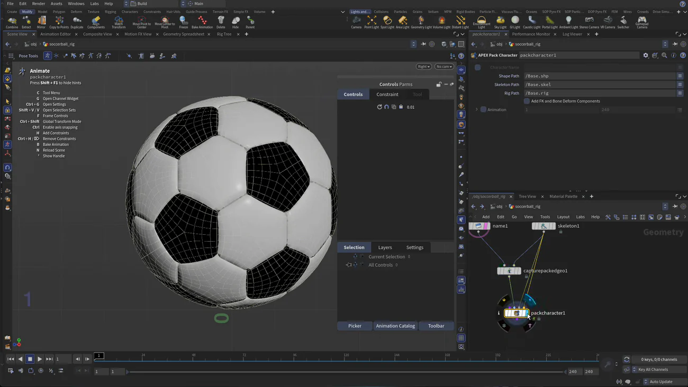
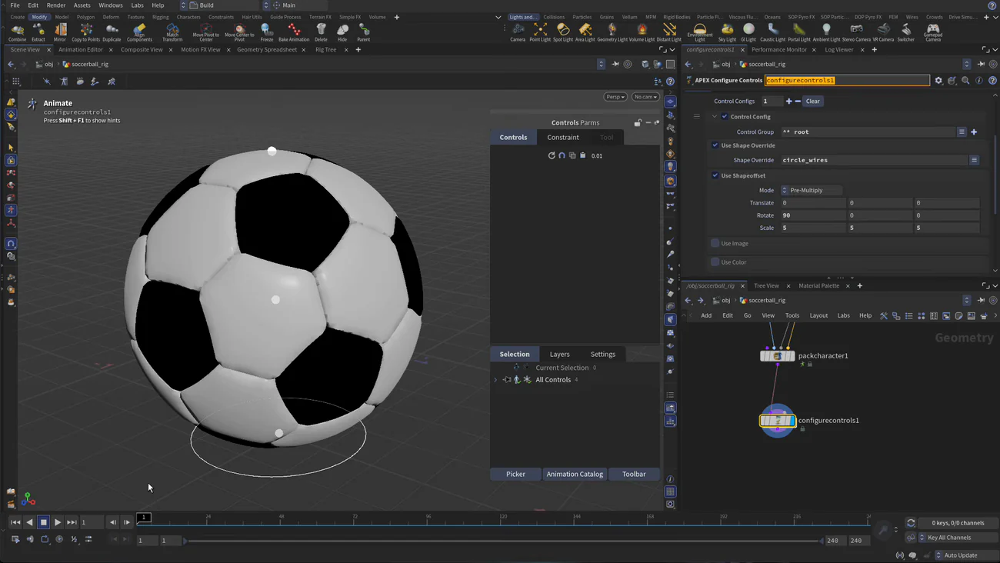

Houdini 22 入門 6 — APEX でスクワッシュ＆ストレッチを仕込む
出典: H22 Foundations | Model Render Animate 6 | Rig the Soccerball （SideFX 公式チュートリアル H22 Foundations: Model, Render, Animate の第6回 / Houdini 22 / 27:03 / 英語）。 このページは、上記の動画を見ながら自分用にまとめた日本語の学習メモです。SideFX 公式の翻訳ではありません。 前回はQuick Surface Material でテクスチャを割り当てるでした。
この回で扱うこと
- リグを別のオブジェクトに切り出すやり方（Extract と Object Merge）
- 4つのジョイントにそれぞれ役割を持たせた最小のスケルトンの作り方
Capture Packed Geometryでnameアトリビュートを使ってジオメトリを結びつけることAPEX Pack Characterの Add FK and Bone Deform Components で、ジョイントがコントロールになることAPEX Configure Controlsでコントロールの形・色・可動範囲のリミットを決めることAPEX Set Driven Keyで「前進したら転がる」「上下でスクワッシュ＆ストレッチ」の2つの関係を作ること。11459 という数字の出どころも含めて- いちばん驚くところ — ジオメトリを書き出すとリグロジックも一緒に付いてくる
27分あってシリーズ最長ですが、やっていることは「4つのジョイントに役割を振って、 2つの関係式を仕込む」だけです。順番だけ押さえれば追えると思います。
1. リグを別オブジェクトに切り出す
まず Karma を切って Vulkan に戻し、Build デスクトップに帰ります。
リグはボールと同じネットワークの中に作ることもできますが、動画では分けています。 Modify シェルフの Extract を使うと、新しいオブジェクトと Object Merge が作られます。元のオブジェクトからジオメトリを引っぱってくる、 動画の言い方だと「ワームホール」です。
名前を soccerball_rig にします。これで、モデリングのネットワークを触らずにリグを組めます。
Name ノードを先に置く
中に入って、まず Tab から Name ノードを置いて soccerball と名前を付けます。
これは後のキャプチャで掴む手がかりになるので、先にやっておきます。
ビューは スペース + B で右からの正面図にすると、この後の作業がやりやすいです。
2. 4つのジョイントでスケルトンを作る
ジオメトリをテンプレート表示にしてから、Tab で Skeleton を置きます。
グリッドスナップをオンにしておきます。
- 下と上をクリックして、中クリックで確定します。これで1本の骨ができます
Shift+Ctrlでクリックすると半分に割れます。2回やって、ジョイントを4つにします- Modify モードに切り替えて、下から順に名前を付けます
| ジョイント | 役割 |
|---|---|
root | ボール全体を動かす。アニメーターが実際に掴むもの |
scale pivot | スケール（スクワッシュ＆ストレッチの実体） |
rotate pivot | 回転（転がり）。ジオメトリはここに結びつけます |
squash control | アニメーターが上下に動かして、スクワッシュ量を指示するためのハンドル |
4つに分けたのは骨が必要だからではなく、「どのジョイントが何を担当するか」を分けたいからです。 最小のリグでも役割を分けておくと、後の Set Driven Key が素直に書けます。
scale pivot を root の位置まで下げる
child compensate と tweak mode をオンにして、
グリッドスナップのまま scale pivot を root の真上まで下げます。
child compensate が入っているので、子は付いてきません。
回転を全部ゼロにする
P を押すと回転が見えるので、4つ全部の Rotate を 0, 0, 0 にします。
簡単なリグなので、すべてワールドと揃っていてほしいからです。
Translate はゼロにしなくて構いません。ここは間違えやすいところだと思います。
3. 階層を組み替える
新しいペインで Animation Rig Tree を開くと、ジョイントの親子関係が見えます。
ここで squash control をドラッグして root の子にします。
root | ├ scale pivot → その子に rotate pivot |
└ squash control |
squash control だけが別の枝になっているのが要点です。
これは指示を出すためのハンドルなので、スケールの下にあってはいけません。
4. Capture Packed Geometry で結びつける
Tab から Capture Packed Geometry を置いて、ジオメトリとスケルトンを繋ぎます。
| 設定 | 内容 |
|---|---|
| Pack Input | オン。入ってくる途中でジオメトリをパックします |
| Capture by Attribute | name アトリビュートを使います。だから最初に Name ノードを置いておいたわけです |
| 手動キャプチャ | soccerball のジオメトリを rotate pivot に割り当てます |
結びつける先が rotate pivot なのは、そのピボットを中心に回ってほしいからです。
そして rotate pivot は scale pivot の子なので、
スケールの影響も自然に受けます。階層をあの形にした理由がここで効いてきます。
5. APEX Pack Character でリグにする
Tab から APEX Pack Character を置きます。
これが APEX の世界への入口で、アニメーターが使うリグロジックはここから組み立てられていきます。

| パラメータ | 値 |
|---|---|
| Shape Path | /Base.shp |
| Skeleton Path | /Base.skel |
| Rig Path | /Base.rig |
| Add FK and Bone Deform Components | オン |
この Add FK and Bone Deform Components が効くと、 それぞれのジョイントがコントロールになり、同時にジオメトリのキャプチャも成立します。 最初はパラメータが灰色になっていますが、上のトグルを切ると触れるようになります。
どのジョイントにどのチャンネルを持たせるか
| ジョイント | 持たせるチャンネル |
|---|---|
root | Translate |
squash control | Translate |
rotate pivot | Rotate だけ |
scale pivot | Scale だけ |
ここまでで動作確認ができます。rotate pivot を回すとボールが回り、
scale pivot をいじると素朴なスクワッシュ＆ストレッチになります。
Reset ボタンで戻せます。
アニメートステートのホットキー
この状態で Shift + F1 を押すとヒント表示を消せますが、
逆に出しておくと便利な一覧が出ています。
| キー | 内容 |
|---|---|
C | Tool Menu |
G / Ctrl+G | Open Channel Widget / Open Settings |
Shift+V / V | Open Selection Sets |
F | Frame Controls |
Ctrl+Shift | Global Transform Mode |
Ctrl | Enable axis snapping |
H / Ctrl+H | Add Constraints / Remove Constraints |
B | Bake Animation |
N | Reload Scene |
6. Configure Controls で形・色・リミットを決める
Tab から APEX Configure Controls を置きます。
動画がここで挟んでいるコツがあります。いったん Esc で抜けて入り直すと、
前に選んでいたノードの残りが消えて表示がきれいになります。この後も何度か出てきます。

root のコントロール
| 項目 | 値 | なぜ |
|---|---|---|
| Control Group | root | どのジョイントの見た目を変えるか |
| Shape Override | circle_wires | 既定の点だと掴みにくいので円にします |
| Shape Offset の Mode | Pre-Multiply | |
| Rotate | 90, 0, 0 | 円を床に寝かせるための回転です |
| Scale | 5, 5, 5 | そのままだと小さすぎて見えません |
| 色 | 赤 | 見分けるためです |
リミットで動ける方向を絞る
ここがリギングらしいところです。Limits をオンにして、
T（Translate）に対して範囲を入れます。
| コントロール | min | max | 結果 |
|---|---|---|---|
root | 0, 0, 0 | 0, 100, 100 |
X はコントロールが作られません。Y は 0〜100、Z は 0〜100 の範囲だけ動きます |
squash control | -1 | 1 |
Y 方向だけ、−1 から 1 の範囲で動きます |
min と max が同じ値（0 と 0）の軸には、そもそもコントロールが作られません。 「使わない軸は触れないようにする」という指定がこれで書けます。 実際に動かすと、上に行って止まり、下に行って止まるのが確認できます。
squash control の形はボックスにして、Shape Offset の Scale を 4, 4, 4、色は青にしています。
形と色で役割が分かるようにしておくのは、後で自分が助かる部分だと思います。
この時点では squash control を動かしても何も起きません。
それを繋ぐのが次の Set Driven Key です。
7. Set Driven Key その1 — 前進したら転がる
Set Driven Key は「駆動する側（driver）」と「駆動される結果（driven）」の関係を作る仕組みです。
Tab から APEX Set Driven Key を置くと、
Null（差し込み位置の目印）と APEX Rig ノードと Set Driven Key ノードがまとめて作られます。
まず「結果」をアニメーションで作る
Pose ツールに入ると Rig Pose があり、そこにアニメーションレイヤーを作れます。
- 空のレイヤーを作って
rollと名付けます rotate pivotを選び、右クリックから add selected control to layer を選びます- 現在フレームを 0 にして
Kで回転チャンネルにキーを打ちます - フレーム 10 に移動して
Kを押し、Rotate X に 11459 を入れます
K を押さずに数値を入れるとキーになりません。
逆に K を先に押しておけば、後から数値を変えても自動で反映されます。
11459 はどこから来たのか
いきなり出てくる数字なので戸惑いますが、ちゃんと計算されたものです。 「1回転で進む距離」から逆算しています。
| 半径 | r = 0.5（レッスン3で 1×1×1 に正規化したので直径 1、半径 0.5 です） |
| 1周の距離 | 2πr = π ≈ 3.1416 |
| 1単位進むのに必要な回転 | 360 / 2πr = 360 / π ≈ 114.59 度 |
| 100 単位ぶん | 114.59 × 100 = 11459 度 |
つまり「Z 方向に 100 進むあいだに 11459 度回れば、滑らずに転がって見える」という値です。 レッスン3で大きさを 1×1×1 に決めておいたことが、ここで数字として効いてきます。
カーブを直線にする
アニメーションエディタで見ると、キーの間がイーズイン・イーズアウトになっています。 Set Driven Key の元にするなら直線のほうが素直なので、まっすぐにします。 緩急は後で driver 側をアニメートするときに付ければ足ります。
Esc で抜けると Rig Pose のアニメーションチャンネルが消えますが、
これはアニメートステートの中にしか出ないものなので、消えて正常です。
関係を結ぶ
| 設定 | 値 |
|---|---|
| アニメーションレイヤー | roll |
| 範囲 | 0 〜 10。最初のキーを1ではなく0に打った理由がこれです |
| Driver | root.tz — root の Z 移動 |
| Fit | 0 〜 100。11459 を出すときに使った 100 と同じ値です |
これで root を前に動かすとボールが転がります。上下に動かしても回りません。
狙い通りです。
8. Set Driven Key その2 — スクワッシュ＆ストレッチ
同じ手順をもう一度やります。レイヤー名は squash です。
scale pivotをレイヤーに加えます（これが変形する実体です）- 操作されるコントロールとして
squash controlを加えます - フレーム 10 で
K。縦に伸ばして、2つのボックスのあいだにある小さな四角を使って横を同時に縮めます - フレーム 0 で
K。今度は縦に潰して、同じ四角で横を広げます
伸びたら細くなり、潰れたら太くなる——体積を保つ動きです。 2軸をまとめて動かせる小さな四角のハンドルが、ここで役に立ちます。
ここでも最後にカーブを直線にします。
作業中に転がりが邪魔なら、roll のレイヤーを一時的に切っておけます。
| 設定 | 値 |
|---|---|
| アニメーションレイヤー | squash |
| 範囲 | 0 〜 10 |
| Driver | squash control.ty |
| Fit | -1 〜 1（Configure Controls で入れたリミットと同じ範囲です） |
青いボックスを下げると潰れ、上げると伸びます。 リミットの −1〜1 と Fit の −1〜1 を揃えているので、ハンドルの端がちょうど変形の端になります。 このあたりの数字の揃え方が、使いやすいリグとそうでないリグの差になるのだと思います。
9. 使わないコントロールを見えなくする
Configure Controls に戻って3つ目の設定を足し、
rotate pivot と scale pivot の Shape Offset の Scale を
0.01, 0.01, 0.01 にします。
これで画面から点が消えます。消したのは見た目だけで、コントロールとしては残っています。 Set Driven Key が動かしている部分なので、アニメーターが誤って掴む必要がありません。 「触らせたくないものは消す」という整理です。
10. アニメーターのための入口を作る
- APEX Scene Add Character を置いて、キャラクター名を
soccerballにします - APEX Scene Animate を置きます。これがアニメーターが触るノードです。打ったキーはここに溜まります
表示フラグを立てて Pose に入ると、ボールを転がしたりスクワッシュさせたりできます。
ここでも表示がおかしくなったら Esc → 選び直し → 入り直しで直ります。
11. 書き出すとリグロジックも付いてくる
アニメーターに、ここまでの組み立てを全部見せる必要はありません。そこで書き出します。
| ノード | ROP Geometry Object（ROP Geo） |
| 入力 | Scene Add Character の出力 |
| 出力ファイル | ball_rig.bgeo |
「ジオメトリを保存しただけでは、リグのロジックはどこへ行くのか」と思うところですが、 ここがこの回でいちばん面白い部分です。
新しいペインで APEX Network View を開くと、 これまで置いてきた APEX のノードたちが裏側で組み立てていたロジックが見えます。 コントロールの設定も Set Driven Key も、全部ここにあります。 このコースでは触る必要がありませんが、もっと複雑なリグならここを直接いじることになります。
そしてこのネットワークは、他のノードの中に入っているのではなく、ジオメトリと一緒に運ばれます。
だから ball_rig.bgeo を保存すると、リグロジックも一緒に保存されます。
本当に付いてくるか確かめる
- オブジェクトレベルでリグのオブジェクトを隠します
- 新しいジオメトリオブジェクト
soccerball_animを作ります FileSOP でball_rig.bgeoを読み込みます- この時点ではただのジオメトリに見えます
- Animate ツールをクリックします
すると Houdini が「これには Scene Animate が必要だ」と判断して、 リグロジックが現れます。コントロールの形も色もリミットもそのままです。 隠れていただけで、ちゃんと付いてきていたわけです。
アニメーターの側からは、ファイルを1つ読み込むだけでリグが使える状態になります。 受け渡しの形としてかなり気持ちがいいなと思いました。
この回のまとめ
- リグは Modify シェルフの Extract で別オブジェクトに切り出せます。Object Merge が元のジオメトリを引っぱってきます
- キャプチャで使うので、Name ノードを先に置きます
- ジョイントは
Shift+Ctrlクリックで半分に割れます。4つに分けて役割を分担させます - 4つとも Rotate は 0,0,0 に揃えます。Translate はゼロにしなくて構いません
squash controlはrootの子にします。スケールの下に置いてはいけません- ジオメトリは
rotate pivotにキャプチャします。回ってほしい中心がそこだからです - Add FK and Bone Deform Components をオンにすると、ジョイントがコントロールになります
- リミットは min と max が同じ軸にはコントロールが作られません。使わない軸を塞ぐのに使えます
- 11459 度は
360 / 2πr × 100（r = 0.5）です。レッスン3の正規化がここで効きます - Set Driven Key の元にするアニメーションはカーブを直線にしておきます。緩急は driver 側で付けます
- 最初のキーをフレーム 0 に打つのは、Set Driven Key の範囲を 0〜10 にするためです
- 見せたくないコントロールは Shape Offset の Scale を 0.01 にすれば消えます。機能は残ります
- APEX のリグロジックはジオメトリと一緒に運ばれます。
.bgeoを読んで Animate ツールを押すだけでリグが復活します
次の第7回は、このリグを使って古典的なバウンシングボールをアニメートします。 キーフレーム、カーブのタンジェント、モーションパスを扱って、最後に USD として書き出します。